BIO 5 · Human Biology · Fall 2026 · Whalen
Week 11 — Sensory Systems
Each source keeps its own tab; the last tab blends them into one account of the week.
Deadlines this week
-
Mon 10/19
Readings: Ch. 9
read before the week's lectures -
Mon 10/19
Board work sheet
handed in at the start of lab -
Fri 10/23
Extra credit — Padlet Encouragement Discussion
up to 1 pt -
Fri 10/23
11:59pm Mastering Biology DSM: CH 9
1 pt -
Fri 10/23
11:59pm WK 11 Practice Test
5 pts -
Fri 10/23
11:59pm Lab 10 document — 10 pts
Lab 10: Senses · Lab 10 Quiz, 15 pts
This week's lab
- Lab 10 — Senses
Monday 10/19
Coming up
- Week 12 — Endocrine System
Oct 26–30, 2026
Chapter 9 — Sensory Systems
Captured from the Pearson eText. pp. 152–170.
- 9.1 Sensory Receptors
- 9.2 Classes of Receptors
- 9.3 The General Senses
- 9.4 Vision
- 9.5 Hearing
- 9.6 Balance and the Vestibular Apparatus of the Inner Ear
- 9.7 Smell and Taste
Did you know
- Nearsightedness (myopia) in young adults in the United States has almost doubled in the past 30 years, probably because of time spent on close work such as computers.
- A human has about 12 million olfactory receptors and can distinguish about 10,000 odors.
Opening
Ch. 8 was how the brain integrates sensory information; 8a was how drugs alter it. Ch. 9 steps back to the receptors: the general senses (touch, pressure, vibration, temperature, pain) and the special senses (vision, hearing, balance, smell, taste). Vision, hearing and balance get the close look; smell and taste are taken together because they work together. (p. 152)
The chapter as one chain
- A receptor is a transducer — it detects a change in the environment and turns it into an electrochemical message; past threshold that becomes an action potential.
- The brain, not the receptor, decides what you experience — sensation is awareness, perception is the cortex's interpretation, and the destination of the impulse decides whether you see, hear or feel.
- Receptors are classified by the stimulus — mechano-, thermo-, photo-, chemo- and pain receptors. Every sense in the chapter is one of these five in a particular package.
- The general senses are those five scattered loose through the body — free or encapsulated nerve endings in skin, muscle, joints and viscera.
- The special senses are the same classes concentrated into organs in the head — the eye focuses light onto photoreceptors; the ear turns air pressure into fluid waves into hair-cell bending.
- Hearing and balance share a receptor and an organ — hair cells in the inner ear, bent by sound in the cochlea and by movement or gravity in the vestibular apparatus.
- Smell and taste are both chemoreceptors and inseparable in practice — about 80% of flavour is smell.
9.1Sensory Receptors
pp. 153Receptors, sensation, perception
- Sensory receptors — structures specialised to detect and respond to changes in the environment, called stimuli, from the external world and the body's interior. A strong enough stimulus becomes a nerve impulse (action potential) carried to the spinal cord or brain by sensory neurons.
- Sensation — awareness of a stimulus. Which sense you experience depends on which part of the brain receives the impulses, not on the receptor or stimulus: photoreceptors respond best to light but also to pressure, and either way the visual cortex gets the message — press on closed eyelids and you see light.
- Perception — the brain's interpretation of sensory input; understanding, not just awareness. Happens when the cerebral cortex integrates the input — the pattern from a banana becomes a banana.
- The receptor's response is a change in the charge difference across its membrane that grows with the stimulus — the louder the sound, the larger the change, up to a point. At a critical level, the threshold level, an action potential fires.
- Sensory adaptation — most receptors gradually stop responding to a continuous stimulus and we become less aware of it: a shop's musty smell fades for the clerk. Touch and pressure receptors adapt fastest — we stop feeling our clothes. Adaptation also happens in the CNS — the reticular activating system filters stimuli (Ch. 8). Some receptors adapt slowly or not at all: the muscle and joint receptors that report body position never adapt, because continuous input is essential for coordinated movement and balance.

9.2Classes of Receptors
pp. 154The five classes
- Mechanoreceptors — touch, pressure, hearing and equilibrium; also blood pressure and body position. Respond to distortion of the receptor or nearby cells.
- Thermoreceptors — changes in temperature.
- Photoreceptors — changes in light intensity.
- Chemoreceptors — chemicals. From the mouth, taste (gustation); from the nose, smell (olfaction); others monitor carbon dioxide, oxygen and glucose in body fluids.
- Pain receptors (nociceptors) — very strong stimuli, usually from physical or chemical damage to tissue. Sometimes classed with chemoreceptors (they respond to chemicals released by damaged tissue), occasionally with mechanoreceptors (they respond to physical change such as swelling).
- Receptors near the body surface respond to the environment and we are usually aware of them. Internal receptors monitor conditions inside and we often are not — yet they are key parts of the feedback loops for blood pressure, blood chemistry and breathing rate, and they produce pain, hunger and thirst, prompting us to attend to the body's needs.
- General senses — touch, pressure, vibration, temperature, body and limb position, pain — from receptors in skin, muscles, joints, bones and internal organs. Not usually noticed, but they report body position and keep internal conditions in healthy limits. Special senses — vision, hearing, balance (equilibrium), smell, taste — receptors in the head, most within specific structures.
9.3The General Senses
pp. 155Touch, pressure and vibration
- Free nerve endings — the tips of sensory-neuron dendrites with no accessory structure. Encapsulated nerve endings — dendrite tips enclosed and protected by a connective-tissue capsule.
- Mechanoreceptors respond to anything that stretches, compresses or twists the receptor membrane. Touch teaches and communicates; pressure says loosen the belt after a meal, or reports blood pressure.
- Free nerve endings around hair bases detect bending of the fine skin hairs (light touch).
- Merkel disks — free nerve endings together with the Merkel cells they end on; compression of the cell stimulates the ending. Hairy and hairless skin.
- Meissner's corpuscles — encapsulated; tell us exactly where we were touched. Hairless, very sensitive skin — lips, nipples, fingertips.
- Pacinian corpuscles — onionlike layers around a nerve ending; respond when pressure is first applied and adapt quickly, so they sense vibration. Deeper skin and underlying tissue.
- Ruffini corpuscles — encapsulated; continuous pressure.
- Pressure as a sensation lasts longer than touch and is felt over a larger area.
Temperature, position, pain
- Thermoreceptors — specialised free nerve endings just below the skin surface, one kind for cold and one for warmth; widely distributed, most numerous around the lips and mouth. Most active while temperature is changing; adapt rapidly once it is stable — a hot tub scalds, then is comfortable.
- Body and limb position — the brain continuously scans muscle and joint signals to check alignment and coordinate balance and movement, combining them with inner-ear input.
- Muscle spindles — specialised muscle fibres wrapped in sensory endings; monitor muscle length and fire when the muscle is stretched.
- Tendon organs — branched nerve fibres in tendons (the bands joining muscle to bone); measure muscle tension and fire when a contracting muscle pulls on the tendon.
- Pain receptors — free nerve endings in almost every tissue. Damaged cells release chemicals that alert the endings; the message is read as pain in the brain. Aspirin and ibuprofen reduce pain by interfering with production of one of those chemicals. Any stimulus strong enough to damage tissue — heat, cold, touch, pressure — can cause pain. Pain warns and protects — it keeps a broken leg still — but pain that outlasts its warning is debilitating.
- Referred pain — pain from an internal organ felt in an uninjured region of skin; a heart attack is often felt in the left arm. Probable mechanism: sensory neurons from the organ and from that patch of skin converge on the same spinal-cord neurons, so the brain attributes the input to the skin.


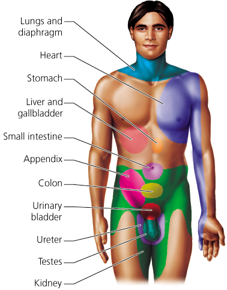
9.4Vision
pp. 156–159Wall of the eyeball
- The eyeball is an irregular sphere about 25 mm (1 in.) across, with three layers.
- Outer layer — tough and fibrous. Sclera, the white of the eye: protects and shapes the ball and anchors the muscles that move it. Cornea, transparent, bulging slightly at the front and centre: the window light enters.
- Middle layer —
- Choroid — blood vessels supplying nutrients and oxygen, plus the brown pigment melanin, which absorbs light reflected from the retina and sharpens vision by preventing reflection inside the eye.
- Ciliary body — toward the front the choroid becomes a ring of mostly muscle around the lens; holds the lens and controls its shape.
- Iris — the choroid in front of the ciliary body; the coloured part, shaped like a flat doughnut. Regulates how much light enters. The pupil is the doughnut hole. Iris smooth muscle dilates the pupil in dim light, constricts it in bright light; emotion too — wider when frightened or interested, narrower when bored.
- Inner layer — the retina, with almost a quarter-billion photoreceptors that respond to light by generating electrical signals; two types, rods and cones.
- Fovea — small central region where photoreceptors are most concentrated; fine detail needs light focused here. Pinhead-sized, so only about a thousandth of the field is sharp at once; eye movements bring the rest to it.
- Optic nerve — carries the message to the brain. Blind spot — where the optic nerve leaves the retina there are no photoreceptors, so an image falling there is not seen. Unnoticed because involuntary eye movements keep shifting the image and the brain fills in the gap.
Chambers and fluids
- The ciliary body and lens divide the interior into two cavities.
- Posterior chamber — behind the lens; jellylike vitreous humor keeps the ball from collapsing and holds the thin retina against the wall. Made during embryonic development and never replaced.
- Anterior chamber — between cornea and lens; aqueous humor supplies the cornea and lens with nutrients and oxygen, carries off their wastes, and creates the pressure that helps keep the eye's shape. Replaced about every 90 minutes — made by ciliary-body capillaries, circulated, drained to blood through channels around the eye.
- Glaucoma — blocked aqueous drainage raises pressure to dangerous levels; the second most common cause of blindness, after cataracts. Fluid pushes the lens back, compressing retina and optic nerve and collapsing their vessels; starved cells die and vision fades. Painless and progressive, so hard to detect; late signs — blurred vision, headaches, halos.
Focusing
- Sharp vision needs the entering rays to converge with their focal point on the retina.
- Most bending happens at the curved cornea — which is why the retinal image is upside down and backward. The cornea's shape is fixed, so it cannot adjust for distance.
- The lens is elastic; rounder and thicker bends light more, for near objects. Changing lens shape to change the bending is accommodation.
- The ciliary muscle is circular and attached to the lens by ligaments. Muscle contracts → diameter smaller (like pursed lips) → ligament tension relaxes → lens rounds → near focus. Muscle relaxes → diameter larger → tension increases → lens flattens → distant focus. With age the lens loses elasticity and rounds less easily — hence holding the newspaper farther away.
- Cataract — cloudiness or opaqueness of the lens, usually from aging; the lens yellows and blocks light. A haze at first — accidents, early retirement, falls — then a thickening fog. The leading cause of blindness worldwide; treated by replacing the clouded lens with an artificial one. Most common eye problem after 50; UV, bright light and cigarette smoke cause them, so sunglasses and avoiding smoke reduce risk.
- Focusing problems — the three most common visual problems at every age; lenses usually restore normal vision.
- Farsightedness (hyperopia) — distant objects clearer than near; about 5% to 10% of Americans. Eyeball too short or lens too thin, so near images focus behind the retina; the lens cannot round enough. Corrected with convex lenses, thicker in the middle, which converge the light before it enters.
- Nearsightedness (myopia) — near objects clearer than distant. Eyeball elongated or lens too thick, so the image focuses in front of the retina; the lens cannot flatten enough. Corrected with concave lenses, thinner in the middle, which diverge the light slightly. Partly genetic, but close work also causes it — repeated ciliary contraction raises eye pressure and can stretch the ball; look up from the page often, especially if it runs in the family.
- Astigmatism — uneven curvature of cornea or lens makes rays converge unevenly and distorts the image; corrected by lenses that compensate for the asymmetry.
- Laser surgery reshapes the cornea for all three: LASIK cuts a corneal flap and a computer-controlled laser reshapes the middle layer; LASEK cuts the flap in the epithelium only, for corneas too thin or flat for LASIK; PRK shaves a microscopic layer off the surface and flattens it.


Photoreceptors — light to signal
- The eye holds 70% of all the body's sensory receptors. Light in the visible spectrum strikes an object → some wavelengths reflect to the eye → cornea and lens focus them on the retina → photopigment molecules in the photoreceptors absorb them.
- Light splits the photopigment's components, starting reactions that reduce the photoreceptor's release of inhibitory neurotransmitter. That transmitter normally inhibits the processing cells, so less of it means more activity in them.
- Processing starts in the retina. Messages go to bipolar cells — rare neurons with only two processes, an axon and one dendrite on opposite sides of the body — then to interneurons called ganglion cells; together they convert the input into patterns such as edges and spots. The optic nerve carries the signals to the thalamus for some processing, then to the visual cortex at the back of the brain, where perception forms.
- Rods — black-and-white vision; far more numerous than cones. Sensitive to one 10-billionth of a watt — a match 50 mi (80.5 km) away on a clear dark night, in theory. Dim rooms, moonlight, and — by tracking intensity changes across the field — movement.
- Rhodopsin — the rod pigment, packed in membrane-bound disks stacked like coins in the outer segment. Light splits it, cutting the membrane's sodium permeability and changing bipolar and ganglion activity; it is resynthesised in the dark — hence the brief blindness entering a dark room, and the sharpening as it rebuilds.
- Cones — colour vision, and sharp images, because each cone usually feeds only one bipolar cell.
- Colour is wavelength. White light holds all wavelengths (a rainbow is them separated by water droplets); an object reflects some and we see those — an apple reflects mostly red.
- Three cone types — blue, green, red — named for the wavelength each absorbs best, not for a colour it makes. Each absorbs a range, and the ranges overlap, so any colour stimulates each type to a different degree — a banana fires red and green cones, blueberries blue and green — and the brain reads colour from the mix.
- Colour blindness — certain colours cannot be told apart; most colour-blind people see some colours but confuse particular ones. The standard test is a plate of two-colour dots in which one colour forms a number. Cause: a missing or reduced cone type. No red cones → deep reds look black. No green cones → reds are seen but reds, oranges and yellows are not separable. No blue cones is extremely rare. Most function normally using intensity, shape and position; red and green — the traffic colours — are the most confused, but the brightest light shows and signals are always red on top. Schoolchildren are tested so teachers know, since colour maps and graphs can trip them.


End-of-chapter Q9 asks what "determines the amount of light that enters the eye" and lists pupil among the options, not iris. The section text says the iris regulates the amount of light entering, by adjusting the size of the pupil. Both readings are defensible: the pupil is the aperture whose size determines the light admitted; the iris is the muscle that sets it. The question's option list settles it as pupil — but if a short answer asks what regulates light entry, the iris is the structure that does the regulating.
9.5Hearing
pp. 160–164, 166Sound and the three parts of the ear
- Socially the most vital sense — speech binds society; it also reports what we cannot see (a car behind us) and enriches life (music).
- Vibrating objects — strings, a speaker, vocal cords — push repeatedly on the air and make sound waves. Loudness is amplitude, the height from peak to trough. Pitch is frequency, cycles per second — more cycles, higher pitch.
- Outer ear — the receiver. Pinna — the fleshy funnel; gathers sound into the canal, accentuates key speech frequencies so speech stands out from noise, and by its shape and placement on each side of the head localises direction. External auditory canal — pinna to eardrum.
- Eardrum (tympanic membrane) — separates outer from middle ear; as thin as paper and taut as a tambourine head. Vibrates at the sound's frequency and passes the vibration on.
- Middle ear — the amplifier. An air-filled cavity in a skull bone, spanned by the three smallest bones in the body — malleus (hammer), incus (anvil), stapes (stirrup), named for their shapes; levers from eardrum to oval window. The malleus is fixed to the eardrum's inner surface, so vibration rocks malleus → incus → stapes, whose base fits the oval window, the threshold of the inner ear. Force is amplified 22 times — needed to move inner-ear fluid — because the eardrum is larger than the oval window, concentrating the pressure.
- Auditory tube (Eustachian tube) — links the middle ear to the upper throat. Pressure must be nearly equal on both sides of the eardrum or it bulges in or out, with pain and poor hearing. Usually closed and flat; swallowing or yawning opens it to equalise — the "pop" in elevators, aircraft, scuba diving.
- Inner ear — the transmitter. Makes neural messages from pressure waves. Two sensory organs: the cochlea (hearing) and the vestibular apparatus (position and movement, §9.6).
The cochlea
- Pea-sized; the true seat of hearing. A bony tube about 35 mm (1.4 in.) long coiled about two-and-a-half times, like a snail's shell (cochlea = snail). At the wide end, two membrane-covered openings: the upper is the oval window, the lower the round window, which relieves the pressure the oval window's movement creates.
- Uncoiled, three fluid-filled compartments divided by two membranes. The central cochlear duct ends blindly like a glove finger, so the upper (vestibular canal) and lower (tympanic canal) are connected at the tip. The basilar membrane is the floor of the central compartment.
- Spiral organ (of Corti) — on the basilar membrane; the part most directly responsible for hearing. Hair cells plus the overhanging tectorial membrane. Each hair cell has about 100 "hairs" projecting into the tectorial membrane, in rows like picket fences.
- Transduction: stapes rocks the oval window → pressure waves in the fluid → carried from upper to lower compartment (they are continuous) → basilar membrane swings up and down → hairs pressed against the tectorial membrane → bending changes the impulse rate in the auditory (cochlear) nerve, which arises in the cochlea and carries sound to the brain.
- Loudness — louder sound, bigger pressure change, stronger bending of the basilar membrane. Hair cells have different thresholds, so stronger vibration recruits more of them, and each bends more and fires more; the brain reads more impulses as louder.
- Pitch — place on the basilar membrane; the cochlea is a spiral piano keyboard. Near the oval window the membrane is narrow and stiff and, like short strings, vibrates most to high frequencies (a whistle); at the tip it is wider and floppier and answers low frequencies (a bass drum). The brain reads region as pitch.
Hearing loss and infections
- About 28 million Americans have some hearing loss, 2 million are completely deaf; loss that interferes with communication is among the commonest chronic neural impairments in the United States.
- Conductive loss — an obstruction anywhere along the route to the inner ear: wax or foreign matter in the canal (cotton swabs usually make it worse); a thickened eardrum from chronic infection or a perforated one from trauma; fluid in the middle ear with infection, which stops the eardrum moving — temporary.
- Sensorineural deafness — damage to hair cells or the inner ear's nerve supply. Hair cells are lost gradually through life: after age 20 we lose about 1 Hz of a 20,000 Hz range every day. Much damage is noise (see the Environmental Issue); infections — mumps, rubella, syphilis, meningitis — and drugs for tuberculosis and some cancers also damage the nerve. The first sign is losing high frequencies; consonants are higher than vowels and carry the words, so speech blurs — "Could you please repeat that?"
- External ear infection — in the canal. Swimmer's ear, the commonest, water trapped in the canal breeds bacteria: itching, then intense constant pain, worse on chewing or touching the earlobe. Antibiotic drops, heat, pain relief; prevent it by draining the canal after swimming — shake the head.
- Middle ear infection (otitis media) — a nose-and-throat infection travelling up the auditory tube. At least half of children get one, some four or five a year, because children's tubes are nearly horizontal; adults' curve and tilt down. Stabbing earache, impaired hearing, fullness, often fever; usually an antibiotic.


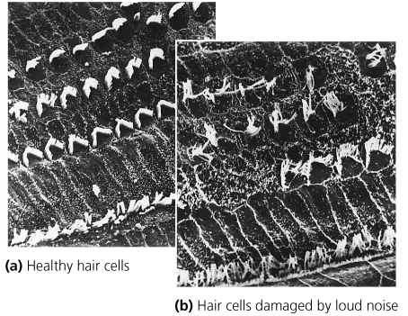

9.6Balance and the Vestibular Apparatus of the Inner Ear
pp. 165Dynamic and static equilibrium
- Vestibular apparatus — a fluid-filled maze of chambers and canals in the inner ear that monitors the head's position and movement. Its receptors are hair cells like the cochlea's; head movement or a change in velocity bends the hairs and the brain uses the signals to keep balance. Two parts: the semicircular canals and the vestibule.
- Semicircular canals — dynamic equilibrium, balance while the body or head is moving; they monitor sudden movements including acceleration and deceleration. Three per ear, at right angles to one another. Movement sends the fluid the opposite way, as acceleration throws passengers back: "yes" swirls the canals beside the head, "no" the canals parallel to the horizon, tilting the canals parallel to the face — any movement resolves into three planes.
- Ampulla — the enlarged base of each canal, holding a tuft of hair cells. Cupula — a pointed cap of stiff, pliable gelatin in which their hairs are embedded. On movement the fluid lags a little, bending the cupula and the hair cells; the brain reads the signals to stay balanced in motion.
- Vestibule — static equilibrium, balance when not moving. The utricle and saccule, two fluid-filled cavities that "let us know which end is up" — the head's position with respect to gravity. They also answer acceleration and deceleration, but not rotation. Both hold hair cells under a gel bound with chalklike calcium carbonate granules, the otoliths, which make the gel heavier than its surroundings so it slides over the hair cells whenever the head moves; the brain reads the slide as head position relative to gravity.
- Utricle — hair cells on the chamber's floor, vertical when the head is upright; senses forward tilt and forward motion. Saccule — hair cells on the wall, horizontal when upright; senses vertical movement, as in jumping.
- Motion sickness — dizziness and nausea, sometimes vomiting, thought to come from a mismatch between vestibular input and the eyes. Reading in a car, the eyes say still while the vestibule feels speed, turns, bumps; at sea the vestibule feels rocking while the deck looks level. Watching the horizon sometimes helps; drugs such as Dramamine inhibit the vestibular messages.

9.7Smell and Taste
pp. 167–168Smell
- Perhaps the least appreciated sense, yet about 80% of a food's flavour is really smell — which is why food is bland with a blocked nose.
- Olfactory receptors — not in the nostrils but in a postage-stamp patch in the roof of each nasal cavity. They are sensory neurons that branch into long olfactory hairs projecting from the lining, under a coat of mucus that keeps them moist and dissolves odour molecules; the hairs move and swirl the mucus. One of the few neuron types replaced during life — about every 60 days.
- Pathway: odour molecules ride the air in → dissolve in mucus → bind receptor sites on the hairs → if threshold is reached the message goes to the two olfactory bulbs, which process it and pass it to the limbic system and cerebral cortex (Ch. 8). The limbic system is the seat of emotion and memory, so odours are rarely neutral — perfume sells on scent and sexuality, and a smell can release forgotten memories.
- About 1000 receptor types distinguish about 10,000 odours; each type answers several odours, so the brain identifies one from the combination of types firing.
Taste
- Five primary tastes — sweet, salty, sour, bitter, umami — enough to answer the question that matters: swallow or spit? Sweet → swallow; calories, energy. Salty → swallow; replaces salt lost in sweat. Sour → a dilemma: unripe fruit, which ripens as starch turns to masking sugar, so often better rejected — but oranges, lemons and tomatoes are rich in vitamin C. Bitter → reject; usually poison or spoilage. Umami → swallow; protein.
- Umami — savoury or brothy, from the Japanese for "delicious." Amino acids (especially glutamic acid), small proteins and nucleotides (DNA, RNA) stimulate its receptors. Shiitake broth, chicken or beef broth, parmesan.
- Taste buds — about 10,000, the organs of taste; mostly on the tongue, some on the inner cheeks, the roof of the mouth and the throat. On the tongue most sit in papillae, the bumps that make it rough, 100 to 200 buds per papilla. Cells replaced about every 10 days — a burned mouth is temporary.
- A taste bud is where chemicals in saliva meet the sensory neurons: a lemon-shaped structure of about 40 modified epithelial cells — taste cells that respond to chemicals, and supporting cells. Taste cells carry long taste hairs into a pore at the bud's tip; food molecules dissolved in saliva enter the pore and stimulate them. Taste cells are not neurons, but they generate signals passed to sensory neurons wrapped around them.
- Each taste bud responds to all five tastes, but a single taste cell responds to only one. Because of how buds are distributed, regions of the tongue differ slightly in sensitivity.
- Ahead: neurons give quick responses; the next chapter's endocrine system gives slower, longer ones through hormones.


The chapter gives three different counts of olfactory receptors. Did You Know (p. 152) says "about 12 million olfactory receptors". Figure 9.16's caption (p. 167) says "Within each cavity are some 5 million olfactory receptors" — about 10 million across two cavities. The section text says only "millions". They do not reconcile exactly; record the figure you are asked from and do not average them.
Section text describes the olfactory receptors as branching into long olfactory hairs; the chapter's own Highlighting the Concepts summary says they are "lined with cilia". The same structure under two names — if a question offers "cilia" and "hairs" as separate options, the summary is the one that uses "cilia".
Stop And Think
1Most bipolar cells receive input from several rods but from only one cone in the fovea. How might this difference explain why rods permit us to see at lower light intensities than do cones? How might it explain why the sharpest images are formed when the object is focused on the fovea? (§9.4)
Convergence trades acuity for sensitivity. Many rods feeding one bipolar cell let their individually weak responses summate, so light too faint for any single rod can still drive the shared cell — but the brain cannot then tell which rod was hit, so the signal is spatially smeared. In the fovea it is one cone to one bipolar cell: no pooling, so poor dim-light performance but each receptor's message arrives separately and two close points stay two points — which is acuity.
2As we age, the tissues of the eardrum thicken and become less flexible. How do these changes partially explain why sensitivity to high-frequency sounds is usually lost as we grow older? (§9.5)
The eardrum vibrates in step with the wave that hits it; high frequency means reversing direction many more times a second. A thicker, stiffer membrane responds sluggishly — it keeps up with slow low-frequency reversals but not fast ones — so less high-frequency energy reaches the ossicles, oval window and hair cells. "Partially" because the other cause is loss of hair cells at the cochlea's base, the high-frequency region, where noise damage strikes first.
3When you stop moving, there is a time lag before the fluid in the semicircular canals stops swirling. How does this time lag account for the sensation of dizziness after you have been twirling around for a while? (§9.6)
The canals report fluid movement relative to the canal, not rotation itself. While you spin the fluid lags, then catches up; when you stop, its momentum keeps it swirling in the direction you were turning, so it goes on pushing the cupula and the hair cells keep reporting rotation — while the eyes and the vestibule say you are still. The mismatch is dizziness, until the fluid settles.
Figure Questions
1If you had pain caused by a kidney stone, where would you experience the pain? (Figure 9.4, p. 155)
Not over the kidney. On Figure 9.4's map the kidney's zone is the lower abdomen and upper thighs, with the ureter's zone in the groin as the stone descends — referred pain, because fibres from the organ and that patch of skin enter the cord at the same level and the brain assigns the signal to the skin.
Boxed essays
Noise Pollution (§9.5, pp. 164, 166)
- Loud noise wears down the hairs on the inner ear's hair cells; they lose flexibility and can fuse (Figure 9.A). There is no repair — you cannot grow spare parts for your ears. Excessive noise causes the hearing loss of one-third of all hearing-impaired people.
- The decibel scale is logarithmic; +10 dB is generally twice as loud. Over 60 dB is intrusive, over 80 dB annoying, over 100 dB extremely bothersome. OSHA's safety limit is 85 dB for 8 hours. Physical pain begins at 140 dB.
- Many young people have impaired hearing, most likely from music. Keep music low enough to hear other sounds; with earbuds nobody else should hear it; wear earplugs for mowing, vacuuming, concerts.
- The first sign of sensorineural damage is losing high frequencies — consonants, which carry the words, are higher than vowels, so speech becomes hard to follow.
- Questions to consider: should local governments regulate noise pollution more? Should concert volume be regulated?
Deafness, cochlear implants and Deaf culture (§9.5, pp. 164, 166)
- Many deaf people consider themselves a cultural group, not a group with a medical problem; the real challenge, the argument runs, is communication, so the solution should be social, not medical. If the technology exists, should it be used to "fix" deafness? Would you want a cochlear implant for a child born deaf, who cannot yet decide? An ethics prompt — the box offers no data.
End Of Chapter Questions
1Pacinian corpuscles sense
a) pressure. b) light touch. c) warmth. d) pain.
a
Figure 9.2 captions it "strong pressure; vibration." Light touch (b) is the Merkel disk and Meissner's corpuscle; the absent trap is Ruffini, which is continuous pressure.
2The spiral organ (of Corti) is important in sensing
a) body movement. b) sound. c) light. d) degree of muscle contraction.
b
"The actual organ of hearing" (Figure 9.14, Table 9.3). Body movement (a) is the vestibular apparatus, which sits beside the cochlea but is not part of it.
3The greatest concentration of cones is found in the
a) sclera. b) lens. c) ciliary body. d) fovea.
d
Table 9.1 — "small pit in the retina that has a high concentration of cones." The other three handle light before it reaches any photoreceptor.
4Noah is a 4-year-old boy who has a middle ear infection. The cause of the infection could be
a) bacteria that spread to the ear from a sore throat. b) excessive wax buildup in the ear canal. c) water that was trapped in the ear after bathing. d) noise pollution.
a
Otitis media is a throat infection travelling the auditory tube — easily, in a child, because the tube is nearly horizontal. (c) is swimmer's ear, an outer ear infection, and the trap.
5The blind spot of the eye is
a) located in the cornea. b) the region where the optic nerve leaves the eye. c) the region of the eye where rods outnumber cones. d) the region where the ciliary muscle attaches.
b
No photoreceptors where the nerve exits; Figure 9.5 labels it "optic disk (blind spot)." (c) is true of most of the peripheral retina, which sees fine — the strongest distractor.
6The loudness or intensity of a sound wave is related to its
a) amplitude. b) frequency. c) duration. d) pitch.
a
Figure 9.12(b): amplitude is loudness. (b) and (d) are the same property under two names — frequency is pitch, panel (c).
7Sound waves are converted into mechanical movements by the
a) bones of the middle ear. b) cochlea. c) oval window. d) round window.
a
The ossicles turn airborne pressure waves into the motion of solid bone — the "amplifier." The cochlea (b) does the opposite conversion, pressure waves to neural messages, and is the trap.
8Information about the position of arms, legs, and peripheral joints of the body in space comes from
a) rods. b) cones. c) proprioceptors. d) semicircular canals.
c
Muscle spindles and tendon organs (Figure 9.3), which never adapt. (d) reports the position and rotation of the head, not the limbs.
9The ______ determines the amount of light that enters the eye.
a) retina b) cornea c) pupil d) fovea
c
The pupil is the aperture; Table 9.1 calls it the "opening for incoming light." See the conflict in §9.4 — the text says the iris regulates light entry by sizing the pupil; iris is not among the options.
10A ______ can detect changes in hydrogen ion concentration.
a) thermoreceptor b) chemoreceptor c) proprioceptor d) pain receptor
b
Hydrogen ion concentration is a chemical quantity — the same internal monitoring as CO₂, O₂ and glucose. (d) tempts because pain receptors are sometimes classed with chemoreceptors, but detecting pH is monitoring, not injury.
11Receptors in the vestibular apparatus respond to changes in
a) head position. b) position of limbs. c) brightness of light. d) taste.
a
Table 9.3 — "monitors position and movement of the head." (b) is the proprioceptors, the Q8 trap run the other way. Applying the Concepts — short answer, p. 170.
12Molly needs glasses for driving but not for reading. What is the name for her visual problem? Describe the shape of the lens she needs to correct her vision.
Nearsightedness (myopia).
Near is clear, far is blurred — the eyeball is too long or the lens too thick and the image focuses in front of the retina. A concave lens, thinner in the middle, diverges the rays so the image falls back on the retina (Figure 9.8c).
13Sarah has a viral infection that is causing vertigo (dizziness). In which part of the ear is the infection?
The inner ear — the vestibular apparatus.
Balance is the semicircular canals and vestibule, in the inner ear; disturbed hair cells there report rotation that is not happening, and the mismatch with vision is vertigo. The outer and middle ear only conduct and amplify sound.
14You are at a baseball game. After watching the ball fly into the stands for a home run, you turn to a friend sitting beside you to ask for some peanuts. What changes occur in your eyes for your friend's face to come into focus?
Accommodation — the lens rounds — plus pupillary constriction.
Set for distance, the ciliary muscle was relaxed, ligaments taut, lens flat. For a face an arm away the muscle contracts, its ring narrows like pursed lips, the ligaments slacken and the lens rounds enough to focus the divergent near rays (Figure 9.6). The pupils also constrict, increasing depth of field. Finding and Evaluating Information — p. 170. From University of Chicago News coverage of a study in older adults: failing a five-odour test (peppermint, fish, orange, rose, leather, in order of difficulty) predicted death within five years — 39% of those who failed died, against 19% with moderate loss and 10% with healthy smell — after adjusting for age, gender, socioeconomic status, health and race. Lead author Jayant M. Pinto: smell loss is "like the canary in the coal mine," a harbinger, not a cause.
15Develop some hypotheses to explain the possible causes for a relationship between loss of smell and death within 5 years.
(i) Olfactory receptors are neurons replaced about every 60 days — one of the few that regenerate — so failing smell may be an early readout of a general collapse in the body's capacity to regenerate. (ii) The olfactory nerve runs straight from the environment into the brain, so smell loss may be an early sign of neurodegenerative disease. (iii) It may mark cumulative toxic or environmental exposure rather than a disease. (iv) It may act weakly through appetite: taste depends on smell, so losing it can reduce intake and lead to malnutrition. The article's framing favours harbinger over cause.
16Does the loss of smell predict death within 5 years? Should a 60-year-old man who can identify only one of the scents assume that he will die soon?
No. It is a population-level correlation, not an individual prognosis, and the author denies causation. 39% of those who failed died — so 61% did not; failing is not even a majority-odds predictor. And the study was of older adults; a 60-year-old may fall outside its range, and his smell loss may have a mundane, treatable cause such as sinus disease, polyps or a past infection. The finding flags a group worth investigating — Pinto's proposed use, a cheap clinical screen — not a verdict on one person.
17Other studies have implied that dogs can detect a scent associated with cancer. Use reliable sources to find research on this subject. What were the methods, results, and conclusions? Were the conclusions valid given the methods and results?
An open research exercise — the book prints no answer and none is supplied here. What to check in whatever study is found: were handlers blinded to which sample was which (unblinded handlers cue dogs unconsciously — the Clever Hans problem, the commonest flaw in this literature); how many samples and dogs, since small numbers inflate accuracy; are sensitivity and specificity both reported, not just the hit rate; did positive and negative samples differ in anything besides cancer — storage, handling, collection site — that a dog could key on; and was the result tested on fresh samples rather than the training set.
Board Work — Lab 10
The in-lab board sheet, block by block. Handed in at the start of lab on Monday 10/19.
- 1 General Senses
- 2 Eye: Structures and Functions
- 3 Ear: Structures and Functions
- 4 Vestibular Sensation
- 5 Taste (Gustation)
- 6 Smell (Olfaction)
1 · General Senses
Draw
A block of skin in section — epidermis, dermis, hypodermis — with the five named receptors drawn at their own depths. Beside it, the three receptor cell types as three small sketches.
- free nerve ending
- encapsulated nerve ending
- specialized receptor cell
- Merkel cell
- Merkel disk
- Meissner's corpuscle
- Pacinian corpuscle
- lamellated corpuscle
- Ruffini corpuscle
- stratum basale
- dermal papilla
- epidermis
- dermis
- hypodermis
- transduction
- chemoreceptor
- nociceptor
- osmoreceptor
- thermoreceptor
- mechanoreceptor
- proprioceptor
- baroreceptor
- photoreceptor
Write
General senses
- All senses except the special senses (vision, hearing, vestibular, taste, smell) — somatic + visceral.
- Sensation = detection of environmental stimuli. Receptors are classified by the stimulus they detect.
Three receptor cell types
- Free nerve endings — dendrites embedded in tissue.
- Encapsulated nerve endings — connective tissue capsule enhances sensitivity.
- Specialized receptor cell — a separate cell. E.g. rods → neurotransmitter → bipolar cell → optic nerve neurons.
- Special senses (except smell) use a separate receptor cell; most general senses use a modified axon terminal of a sensory neuron.
Transduction
- Stimulus → AP, at the receptor: ion channels open → membrane potential changes → AP along the sensory neuron = transmission. Transmission pathway = the neurons + synapses involved.
Skin touch receptors — all mechanoreceptors
- Merkel cell — stratum basale; light touch, fine spatial resolution; hands, feet — Braille.
- Meissner's — dermal papillae, encapsulated; light touch, less detail than Merkel.
- Pacinian — deep dermis; layered capsule (lamellated) — an onion in section.
- Ruffini — deep dermis + hypodermis; stretch → proprioception.
- Free nerve endings — around hair follicles → hair movement; nociceptors → pain; thermoreceptors → temperature.
| Receptor | Detects | Examples |
|---|---|---|
| chemoreceptor | chemical changes | taste, O₂ |
| nociceptor | chemo-: inflammatory chemicals, excess pressure or temperature | pain |
| osmoreceptor | chemo-: solute concentration | hypothalamus |
| thermoreceptor | specific temperature | hot, cold |
| mechanoreceptor | deformation: touch, pressure, stretch, vibration, bending | Meissner's, cochlear hair cells, muscle spindles |
| proprioceptor | specialized mechano-: stretch in muscle, skin, tendon | Ruffini, muscle spindles, Golgi tendon organs |
| baroreceptor | specialized mechano-: stretch in vessel and heart walls | carotid sinus, right atrium |
| photoreceptor | light | rods, cones |
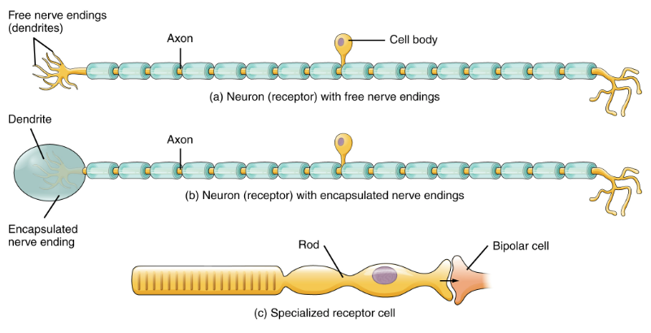
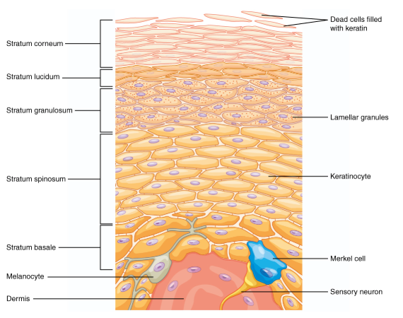
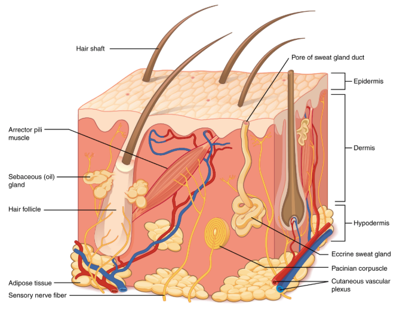
2 · Eye: Structures and Functions
Draw
The eye in horizontal section with the three tunics bracketed, and the path of light arrowed cornea → aqueous humor → pupil → lens → vitreous humor → retina. Small inset: the retina's three cell layers with light arriving from the ganglion side.
- fibrous tunic
- vascular tunic
- nervous tunic
- sclera
- cornea
- iris
- pupil
- ciliary body
- ciliary muscle
- choroid
- retina
- macula
- fovea
- optic disc
- blind spot
- optic nerve
- aqueous humor
- vitreous humor
- anterior cavity
- posterior cavity
- pigmented epithelium
- bipolar cell
- ganglion cell
- rods
- cones
- opsin
- rhodopsin
- hyperpolarization
- occipital lobe
Write
Three tunics
- Vision = photons → AP; the eye aims light at the retina.
- Fibrous (outer) — sclera (white) + cornea (clear, anterior).
- Vascular (middle) — iris (2 smooth muscles → pupil size → light in); ciliary body (ciliary muscle → lens shape, near/far focus); choroid (vessels + pigment that absorbs light, stops scatter).
- Nervous/neural (inner) — retina: 3 cell layers, 2 synaptic layers.
Retina
- Inner → outer: ganglion → bipolar → photoreceptors → pigmented epithelium. Light crosses ganglion + bipolar first.
- Macula — opposite the cornea; its fovea has only cones — sharpest detail.
- Optic disc — no photoreceptors → no signal to the cortex → blind spot; ganglion axons exit as the optic nerve; vessels enter/leave.
Path of light
- Cornea (eye's curve refracts toward fovea) → aqueous humor (anterior cavity; nourishes, removes waste) → pupil → posterior chamber → lens (refracts more) → vitreous humor (gel: passes light, shapes eye, holds retina back) → retina.
- Near: steep angle → lens more convex. Far: parallel rays → ciliary muscle relaxes, lens flatter.
Transduction
- Light hits a photoreceptor → pigment changes shape → cascade → hyperpolarization → inhibitory neurotransmitter stops → bipolar cells, no longer inhibited, fire → ganglion AP → visual cortex, occipital lobe.
Rods vs cones
- Both: inner segment (nucleus, organelles) + outer segment (membrane carrying opsin).
| Rods | Cones | |
|---|---|---|
| Detect | low light, no colour | specific wavelengths |
| Outer segment | long, columnar; rhodopsin discs | short, tapered; membrane folds |
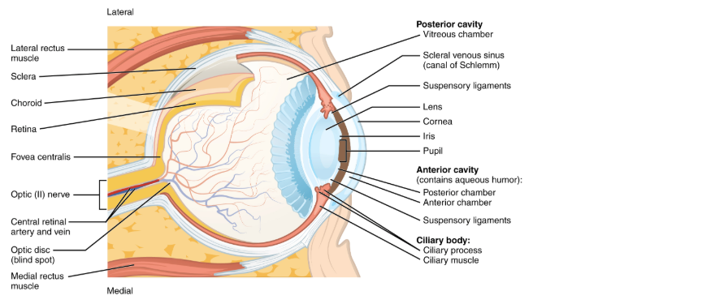
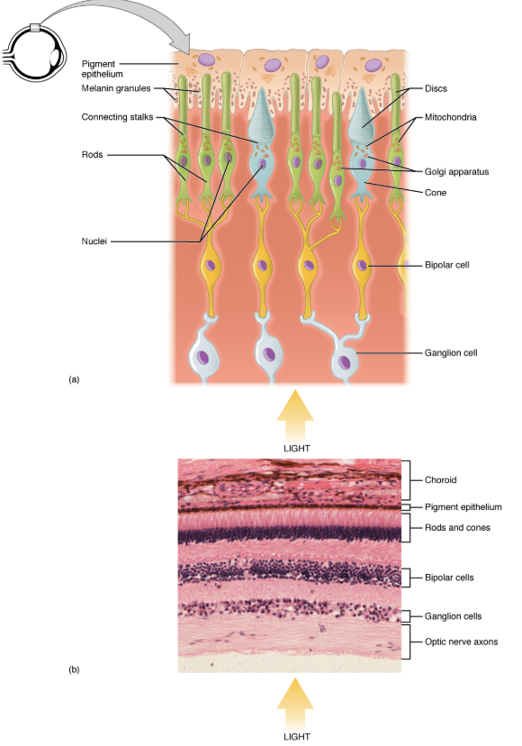
3 · Ear: Structures and Functions
Draw
The ear in section with external / middle / inner bracketed across the bottom. Beside it, the cochlea uncoiled as a strip from base to apex, and a small cross-section showing the three canals with the organ of Corti on the basilar membrane.
- auricle
- pinna
- ear canal
- external auditory canal
- tympanic membrane
- tympanic cavity
- malleus
- incus
- stapes
- oval window
- round window
- Eustachian tube
- auditory tube
- cochlea
- scala vestibuli
- scala tympani
- cochlear duct
- basilar membrane
- tectorial membrane
- organ of Corti
- spiral organ
- hair cells
- perilymph
- cochlear nerve
- base
- apex
- petrous temporal bone
- temporal lobe
Write
Outer ear
- Pinna (auricle) — satellite dish; funnels sound into the auditory canal.
- Tympanic membrane — outer/middle boundary; vibrates.
Middle ear — amplifier
- Malleus → incus → stapes — vibration amplified across them. Malleus fixed to tympanic membrane + incus, so membrane moves malleus → incus → stapes.
- Stapes sits against the oval window (membrane over the opening to the fluid-filled cochlea) → oval window moves → fluid wave in the cochlea.
- Encased in petrous temporal bone, except tympanic membrane, oval window, round window, Eustachian tube.
- Eustachian (auditory) tube — pharynx ↔ middle ear; equalizes pressure.
Inner ear
- Cochlea → hearing; vestibule → equilibrium.
- Wave in scala vestibuli moves perilymph → basilar membrane (floor of cochlear duct) undulates.
- Hair cells sit on the basilar membrane; undulation pushes them up into the tectorial membrane → they bend → neurotransmitter → sensory neurons fire.
- Cochlear branch, CN VIII → auditory cortex, temporal lobe. Wave exits at the round window.
Pitch and loudness
- Basilar membrane: base thick + narrow (near middle ear), apex thin + wide — that variation is what lets different frequencies be detected.
- High → base (20,000 Hz) · mid 1,500 Hz · low → apex (20 Hz). One region per frequency.
- Frequency → pitch: higher frequency = higher pitch, lower = lower.
- Amplitude (wave height) → loudness: bigger wave bends more hair cells → more APs to the cortex.
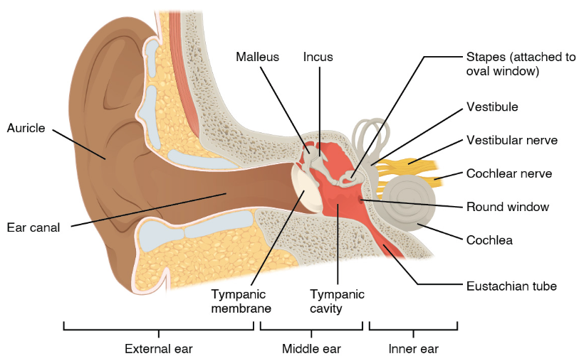
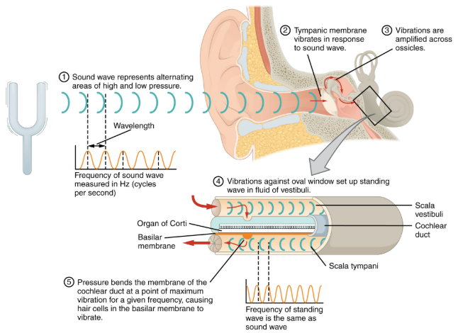
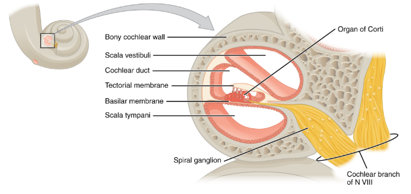
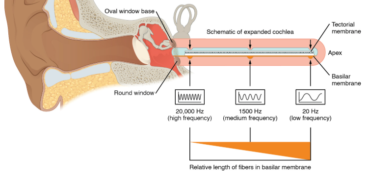
4 · Vestibular Sensation
Draw
The vestibular apparatus — three semicircular canals at different orientations with the ampulla and cupula at the base of one, plus the utricle and saccule each holding a macula. Then two before/after pairs: cupula upright vs bent, and otoliths level vs slid downhill.
- vestibular apparatus
- semicircular canals
- ampulla
- cupula
- hair cells
- stereocilia
- vestibular nerve
- vestibule
- utricle
- saccule
- macula
- otoliths
- otolithic membrane
- endolymph
- dynamic equilibrium
- linear acceleration
Write
What it is
- Vestibular sensation = rotation, head position, linear acceleration (inner ear).
- Vestibular apparatus = semicircular canals + vestibule.
Semicircular canals — rotation
- 3 fluid-filled canals, different planes. Ampulla at each base holds the cupula (gel cone, hair cells at base).
- Head turns → canal swings with it, fluid lags and moves opposite → cupula + hair cells (stereocilia) bend.
- Bend direction → neurotransmitter ↑ or ↓ → vestibular nerve (CN VIII).
- 2 canals in a plane → direction; all 6 → 3-D movement.
- Rotation = dynamic equilibrium.
Vestibule — position and linear acceleration
- Utricle + saccule; their fluid does not move the hair cells.
- Macula: gel with hair cells at base, otoliths on top — floor of utricle (upright), sides of saccule.
- Head tilts → weight of the otoliths pulls the gel + hair cells with gravity → hair cells bend → as in the canals, bend direction sets the neurotransmitter released.
- Linear acceleration (maculae): inertia differs between stereocilia and otolithic membrane → shearing force bends stereocilia in the direction of acceleration.
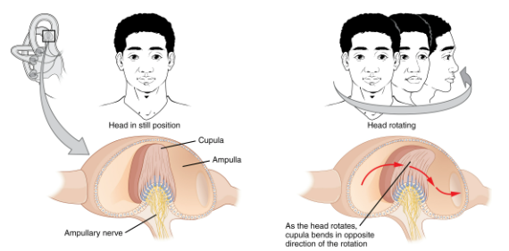
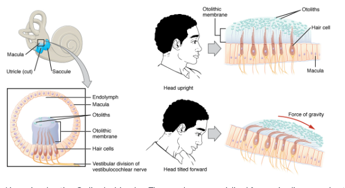
5 · Taste (Gustation)
Draw
The tongue with the four papilla types called out around it, then one taste bud in section — taste pore and taste hairs at the top, gustatory / supporting / basal cells inside, sensory nerve leaving at the bottom.
- taste bud
- papilla
- circumvallate papilla
- fungiform papilla
- filiform papilla
- foliate papilla
- taste cell
- gustatory cell
- supporting cell
- basal cell
- transitional cell
- taste pore
- taste hairs
- umami
- primary gustatory cortex
- parietal lobe
- CN VII
- CN IX
- CN X
Write
- Gustation = taste; taste transduction = chemical → AP.
- Mouth + pharynx; structures such as the tongue house the taste (sensory) cells. Many sit in taste buds on certain papillae (types differ by tongue region).
- Taste bud = taste cells + supporting cells + basal cells (divide, replace taste cells).
- CN VII, IX, X carry taste from tongue + pharynx → primary gustatory cortex, parietal lobe → further associations → full perception of taste.
- Saliva is important: chemicals must dissolve in moisture before taste cells can detect them.
- Taste cells replaced through life — slower with age.
| Cell | Detects |
|---|---|
| Sweet | mono- and disaccharides |
| Salty | K⁺, Na⁺ |
| Sour | H⁺ (acidity) |
| Bitter | alkaloids — most sensitive; spoilage, toxins |
| Umami | amino acids — savory |
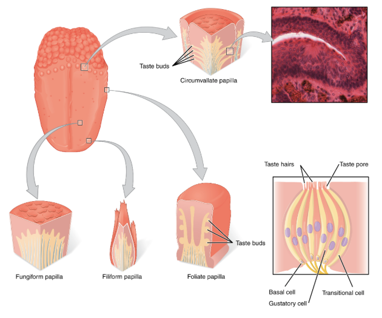
6 · Smell (Olfaction)
Draw
The head in section — nasal cavity, olfactory epithelium in the roof, axons passing up through the cribriform plate into the olfactory bulb. Inset: the epithelium with dendrites sitting in mucus and odorant molecules arriving.
- odorant
- olfactory neuron
- olfactory receptor
- dendrite
- olfactory cilia
- mucus
- olfactory epithelium
- cribriform plate
- ethmoid bone
- olfactory bulb
- olfactory tract
- mitral cells
- nasal conchae
- primary olfactory cortex
- temporal lobe
Write
- Olfaction = smell; relies on chemoreceptors.
- Odorants bind receptors on the olfactory neurons' own dendrites — unique; every other special sense uses a separate receptor cell.
- Neurons sit in the olfactory epithelium, nasal cavity roof.
- Binding → local potential; if threshold is reached → AP.
- AP travels along the olfactory neuron through the cribriform plate (ethmoid) into the cranial vault → synapse in the olfactory bulb → primary olfactory cortex, temporal lobe.
- Linked to taste: the same chemical in food can aerosolize and bind chemoreceptors in the nasal epithelium.
- Neurons replaced through life; replacement and sensitivity decline with age.
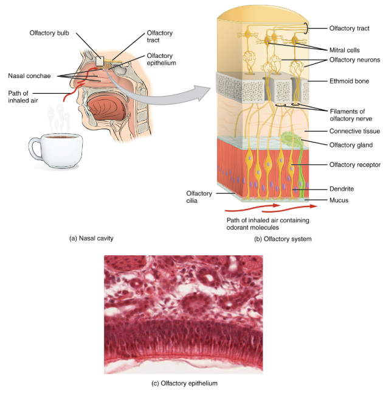
Lecture 1 — Mon 10/19
Nothing here yet.
What goes here
Whalen's transcript, outlined section by section with the slide count kept on each one. Slide count is the emphasis signal for the exam.
Expected Mon 10/19.
Drop the source in weeks/week-11/sources/lectures/, then run /ingest 11.
Lecture 2 — Wed 10/21
Outlined from the transcript.
- L2.1 Where this lecture sits
- L2.2 Photoreceptors and colour vision
- L2.3 Sound: pitch is frequency, loudness is amplitude
- L2.4 Outer and middle ear
- L2.5 The cochlea and the organ of Corti
- L2.6 Hearing loss and ear infections
- L2.7 The vestibular apparatus: dynamic and static equilibrium
- L2.8 Smell begins
L2.1Where this lecture sits
- It starts mid-sentence on the fovea ("The region in the center of that is called a folia…"). The eye anatomy before that point is not in this transcript.
- Order of topics: photoreceptors and colour → the electromagnetic spectrum → sound waves → outer, middle and inner ear → the cochlea and the organ of Corti → hearing loss and ear infections → the vestibular apparatus → motion sickness → smell.
- It ends mid-sentence on smell. Monday 10/26 opens with "last week… almost got through with it… all of, like, 11 slides" and re-teaches smell from the start (Week 12 Lecture 1, L1.2).
- Exam signals said outright:
- The middle ear amplifies about 22 times — "You should probably know that number."
- Semicircular canals = dynamic equilibrium; vestibule = static equilibrium — "Test question."
- Threshold is −55 mV — asked for twice, once for the cochlear neuron and once for the vestibular one.
Bring this tab to the Unit 3 Exam. On Mon 10/26 he said the ear model, eye model and a dissected brain are the lab models on it (Week 12 Lecture 1, L1.4).
L2.2Photoreceptors and colour vision
- Fovea — the centre of the macula; a dense concentration of cones; the area of highest visual acuity. To see detail, the eye moves to put the image on the fovea.
- Light passes through several layers of neurons before it reaches the photoreceptors. The rods and cones sit at the back of the retina, with their light-sensitive ends pointing away from the light.
- When light activates a photoreceptor, the cells that synapse with it are activated, carrying the signal along the optic nerve to the visual centres of the brain.
- The photopigment:
- Rod outer segments are packed with membrane-rich discs holding a transmembrane protein, opsin.
- Each opsin is paired with a much smaller molecule, retinal. In rods the two-molecule complex is rhodopsin.
- Retinal is the light-sensitive part. Light changes retinal's shape → opsin changes shape → a cascade that activates the cell.
- Rods vs cones:
- Rods are more light-sensitive and work in low light.
- Cones respond mainly to bright light and give colour vision.
- The rods and each of the three cone types (blue, red, green) have different opsins, which set the wavelengths each absorbs best. The blue-cone complex answers blue best and yellow less strongly. Input from all three lets the brain tell many hues apart.
- Visible light is a sliver of the electromagnetic spectrum — about 400 to 760 nm. Just outside it are ultraviolet and infrared, which our receptors can't detect. X-rays, microwaves and gamma rays are elsewhere on the same spectrum.
- He is red-green colour-blind. On the dotted-circle test, people with red-green colour blindness see a "27" that isn't the intended number.
Key terms
- Fovea
- densely packed cones; the point of sharpest vision.
- Opsin
- the transmembrane protein of a photopigment; a different one in rods and in each cone type.
- Retinal
- the small light-sensitive molecule paired with opsin; light changes its shape.
- Rhodopsin
- the rod pigment — opsin plus retinal.
He got wavelength and distance backwards, then corrected himself. In L2.4 he said longer light waves sit toward the blue end, then "No, that's a longer wavelength. I have it backwards." Red is the long-wavelength end (~700 nm). His diving example has it right: red is the first colour to disappear underwater.
L2.3Sound: pitch is frequency, loudness is amplitude
- Sound waves are caused by vibrations — the tuning forks in this week's lab. Sound travels through air, water and solids.
- Pitch = frequency, measured in hertz (Hz): shorter waves, more waves past a point per second, higher pitch. Longer waves are lower.
- Loudness = amplitude, the height of the waves. The same pitch can be louder or softer.
- Every species hears a different range — humans one band, dogs, whales and elephants others.
- Hearing damage removes frequencies. A ruptured eardrum, or a middle-ear infection that reaches the inner ear and damages the organ of Corti, can cost you the ability to hear certain frequencies. He failed childhood hearing tests after repeated untreated ear infections.
Key terms
- Pitch
- set by frequency (Hz).
- Loudness
- set by amplitude (wave height).
"Lower frequency travels further" is his aside, not a chapter fact. Know pitch = frequency and loudness = amplitude.
L2.4Outer and middle ear
- Outer ear:
- Pinna (auricle) — the helix and the lobule (earlobe). It gathers sound waves and helps you locate where a sound is coming from; cupping a hand behind it gathers more.
- Earlobes: unattached is dominant, attached is recessive.
- The auditory canal — called the external acoustic meatus where it passes through the temporal bone — directs sound to the tympanic membrane (eardrum; tympanic = drum).
- The eardrum vibrates at the same frequency as the sound waves. It is roughly the boundary between outer and middle ear, and technically counted as part of the outer ear.
- Middle ear — between the tympanic membrane and the oval window; air-filled.
- The auditory ossicles, the three smallest bones in the body, outside to in: malleus (mallet) → incus (anvil) → stapes (stirrup). Each vibrates at the same frequency as the one before.
- The stapes sits on the oval window, the entrance to the inner ear, and pushes it in and out like a speaker cone.
- Vibrations are amplified about 22 times in the middle ear, so the stapes hits the oval window with 22 times the force that hit the eardrum.
- Auditory (Eustachian) tube — connects the middle ear to the throat (pharynx). That's why ear, nose and throat share a doctor.
- Equalises the pressure across the eardrum. Pressure must be nearly equal on both sides for the eardrum to vibrate properly.
- Going up a mountain, outside pressure falls, middle-ear air expands and pushes the eardrum out. Yawning, chewing gum, or holding your nose and blowing opens the tube and lets the air out. His examples: the chip bag puffing up on the drive to Shaver Lake, and equalising every couple of metres when scuba diving.
- In children under about six the tube is more horizontal, so throat infections reach the middle ear more easily. "Shit don't fall uphill" — but it rolls across a flat table.
Key terms
- Tympanic membrane
- the eardrum; vibrates at the frequency of the incoming sound.
- Auditory ossicles
- malleus, incus, stapes — outside to in.
- Oval window
- the membrane the stapes pushes on; entrance to the inner ear.
- Auditory (Eustachian) tube
- connects the middle ear to the pharynx; equalises pressure across the eardrum.
"You should probably know that number": the middle ear amplifies about 22 times. The chapter gives the same figure and the reason — the eardrum is larger than the oval window, so the pressure is concentrated.
He asked "what do we call the earbones collectively?" twice. Answer: auditory ossicles — he wants the full term.
L2.5The cochlea and the organ of Corti
- The inner ear is fluid-filled. It does sound transduction: action potentials generated in response to pressure waves in fluid. Its two parts are the cochlea (hearing; snail-shell shaped) and the vestibular apparatus (balance).
- Two membrane-covered openings into the cochlea:
- Oval window — turns vibration into fluid waves.
- Round window — relieves the pressure. Liquid is incompressible, so when the oval window pushes in, the round window bulges out.
- One tube, folded in half and rolled up like a cinnamon roll:
- Vestibular canal (scala vestibuli) — the upper compartment, attached to the oval window.
- The waves travel to the tip, make a U-turn, and return along the tympanic canal (scala tympani) to the round window. They are the same tube.
- Between them sits the cochlear duct. Its floor is the basilar membrane, which separates it from the tympanic canal.
- Organ of Corti (spiral organ) — inner and outer hair cells sitting on the basilar membrane. Their "hairs" (cilia and stereocilia) touch the overlying tectorial membrane, which is attached at only one edge.
- The sequence: 1. Stapes pushes on the oval window → pressure wave in the vestibular canal first. 2. The wave runs to the tip and back along the tympanic canal. 3. It pushes up on the basilar membrane. 4. Hair cells bump into the tectorial membrane and bend. 5. Bending deforms the hair-cell membrane → changes its permeability to ions → changes its membrane potential. 6. The hair cell stimulates its neuron. At threshold, −55 mV, the neuron fires an action potential. 7. The signal goes along the cochlear branch of cranial nerve VIII (vestibulocochlear) to the midbrain. There the inferior colliculi of the corpora quadrigemina tie sound to visual tracking — you hear a pop and turn to look.
- Loudness — higher amplitude → more hair cells stimulated, each bending further → more impulses. The brain reads more impulses as louder.
- Pitch — the basilar membrane's thickness varies along its length; thinner parts move more easily ("thinner boards bend more than thicker boards"). Different pitches activate hair cells in different places, and the brain reads location as pitch.
- The video he showed added: the stereocilia bend from the shearing force between the basilar and tectorial membranes. The basilar membrane is narrower and stiffer near the middle ear and wider and more flexible at the tip.
- The brain reads every action potential the same way — the meaning comes from where it comes from and where it goes. Someone born deaf has never experienced sound; a cochlear implant can generate the action potentials.
- Hair cells lose sensitivity with age. "Your ears are more sensitive than mine."
Key terms
- Vestibular canal
- upper cochlear compartment, attached to the oval window; the pressure wave hits it first.
- Tympanic canal
- lower compartment, leading to the round window; the same tube as the vestibular canal.
- Cochlear duct
- the central compartment between them.
- Basilar membrane
- floor of the cochlear duct; the organ of Corti sits on it.
- Tectorial membrane
- overlies the hair cells; they bend against it.
- Organ of Corti
- the hair cells of the cochlea — the organ of hearing.
"Which chamber first experiences the pressure wave?" — the vestibular canal. He asked it as an exam question and said "Be specific."
Know what is above and below the hair cells. Below: the basilar membrane. Above: the tectorial membrane. He asked both in class. The vestibular membrane roofs the cochlear duct; "never gonna have to do that one."
L2.6Hearing loss and ear infections
- Conductive hearing loss — an obstruction in the path to the inner ear; something is in the way. The easier one to treat.
- Sensorineural hearing loss — the hair cells or the neurons of the inner ear are damaged.
- Outer-ear infection (swimmer's ear) — water trapped in the canal, at body temperature, grows bacteria. Treated with ear drops.
- Middle-ear infection — spreads from the nose and throat up the auditory tube. Commoner in children because their tubes are more horizontal; the face lengthens around age six.
- Ear drops won't work, because an intact tympanic membrane blocks them. Treatment is systemic — oral antibiotics (amoxicillin, three times a day for seven days in his example).
- Signs: a red, inflamed tympanic membrane. Untreated, it can reach the inner ear and cost hearing.
Key terms
- Conductive hearing loss
- an obstruction on the path into the inner ear.
- Sensorineural hearing loss
- damage to the inner ear's hair cells or neurons.
Why oral, not drops, for a middle-ear infection is the kind of "why" he asks. The eardrum stands between the drops and the infection.
L2.7The vestibular apparatus: dynamic and static equilibrium
- Vestibular apparatus — fluid-filled, in the inner ear: three semicircular canals attached to a larger vestibule. It tracks where you are in space and how you move: linear, vertical and rotational acceleration.
- Semicircular canals → dynamic equilibrium (balance while moving); they monitor rotational movement in three planes:
- Anterior canal → pitch (nodding yes).
- Posterior canal → roll (shoulder to shoulder).
- Lateral canal → yaw (shaking no).
- Ampulla — the enlarged base of each canal. It holds a tuft of hair cells embedded in a gelatinous cupula ("like Jell-O").
- Head movement moves the fluid → fluid pushes the cupula → the stereocilia bend → the mechanoreceptor changes permeability → the neuron reaches −55 mV and fires.
- Vestibule (utricle and saccule) → static equilibrium (balance when not moving), and also linear acceleration — the motorcycle from 0 to 60, slamming the brakes.
- Utricle (overlying) — senses forward tilt of the head; tells you which way is down.
- Saccule (underlying) — senses vertical movement: falling, rolling hills on a country road.
- Otoliths — calcium carbonate crystals sitting on a gel with hair cells embedded in it. They add mass to the top, so when the head tilts, gravity pulls the gel further than it would move alone, bending the hair cells. "You literally got rocks in your head."
- Relative gravity — a pendulum swings back when you accelerate forward. That inertia is what the otoliths register.
- Every action potential is the same. "Ah! That's it." The brain gives it meaning from where it comes from and where it goes.
- Vertigo — a student suggested loose crystals; he wasn't convinced ("what force moves it?") and asked the student to email him the answer. Left unresolved.
- Motion sickness — a disconnect between what the eyes see and what the vestibular apparatus feels. Treated with Dramamine or a transdermal patch behind the ear.
Key terms
- Dynamic equilibrium
- balance during movement; semicircular canals; rotation.
- Static equilibrium
- balance at rest; the vestibule (utricle and saccule); head position and linear acceleration.
- Ampulla
- enlarged base of a semicircular canal.
- Cupula
- the gel cap in the ampulla in which hair cells are embedded.
- Otoliths
- calcium carbonate crystals on the vestibule's gel.
"Vestibule responsible for static equilibrium… Semicircular canals, dynamic equilibrium, test question." Said outright.
Pitch, roll and yaw are his, not the chapter's. Anterior → pitch, posterior → roll, lateral → yaw. The chapter only says the three canals sit at right angles.
Otoliths are in the vestibule (utricle and saccule), not the ampulla. A student asked whether they are in the ampulla, and his answer was unclear in the audio. The chapter puts them in the vestibule; the ampulla has the cupula.
L2.8Smell begins
- Olfactory sensory neurons — long hairs coated in mucus, in the roof of each nasal cavity; replaced during life.
- Odorant molecules dissolve in the mucus and bind olfactory receptors on the hairs.
- They are modified dendrites of bipolar neurons. Bipolar neurons are found in only two places: the retina and the olfactory epithelium.
- At threshold the signal goes to the olfactory bulb, just above the cribriform plate of the ethmoid bone — the start of cranial nerve I (olfactory) — then along the olfactory tract to the olfactory centre of the brain, passing the limbic system.
- Smell is the strongest trigger of stored memory because of that proximity to the limbic system. "The closest thing we have to time travel" — Anton Ego's first bite of ratatouille.
- The transcript ends mid-sentence on an example of a cologne reminding you of an ex.
Key terms
- Olfactory bulb
- the enlargement above the cribriform plate where cranial nerve I begins.
- Bipolar neuron
- found only in the retina and the olfactory epithelium.
HIS ANALOGIES
- The cochlea is one tube folded in half and rolled up like a cinnamon roll.
- The oval window is a subwoofer cone — it just moves in and out.
- The chip bag on the drive up to Shaver Lake — less outside pressure, so the air inside expands; the same thing happens to the eardrum.
- Thinner boards bend more than thicker ones — why the thin part of the basilar membrane answers different pitches.
- The cupula is Jell-O with hair cells stuck in it; otoliths are rocks on top of the Jell-O.
- The pendulum in a moving car — relative gravity, which the otoliths sense.
- Smell is time travel — Anton Ego in Ratatouille.
TRANSCRIPT FIXES
The week, told once
Nothing here yet.
What goes here
One account of the week across every source, a cram list, and the table of where the sources disagree.
Build this last, once the other tabs are filled.
Drop the source in weeks/week-11/content/synth.md, then run /ingest 11.
Where the sources disagree
Collected automatically from every CONFLICT :: callout in this week's content, plus any rows declared in synth.md. Lecture and lab beat the textbook — but nothing here is resolved for you.
| Point | Textbook | Lab / lecture | Use | From |
|---|---|---|---|---|
| End-of-chapter Q9 asks what "determines the amount of light that enters the eye" and lists pupil among the options, not iris. The section text says the iris regulates the amount of light entering, by adjusting the size of the pupil. Both readings are defensible: the pupil is the aperture whose size determines the light admitted; the iris is the muscle that sets it. The question's option list settles it as pupil — but if a short answer asks what regulates light entry, the iris is the structure that does the regulating. | ch9.md | |||
| The chapter gives three different counts of olfactory receptors. Did You Know (p. 152) says "about 12 million olfactory receptors". Figure 9.16's caption (p. 167) says "Within each cavity are some 5 million olfactory receptors" — about 10 million across two cavities. The section text says only "millions". They do not reconcile exactly; record the figure you are asked from and do not average them. | ch9.md | |||
| Section text describes the olfactory receptors as branching into long olfactory hairs; the chapter's own Highlighting the Concepts summary says they are "lined with cilia". The same structure under two names — if a question offers "cilia" and "hairs" as separate options, the summary is the one that uses "cilia". | ch9.md | |||
Source dots: textbook · lab · lecture.